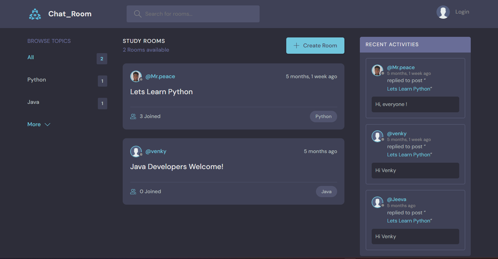
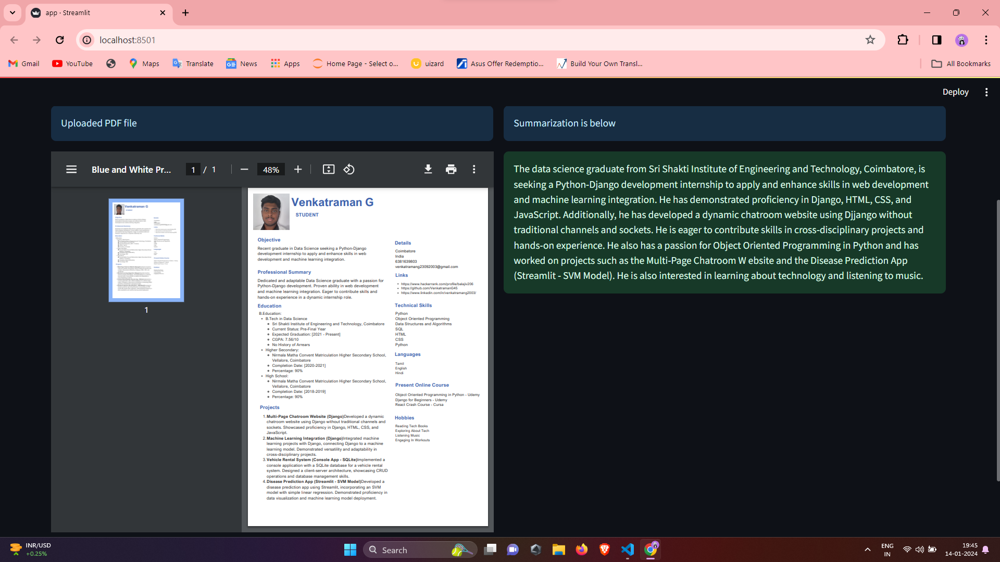
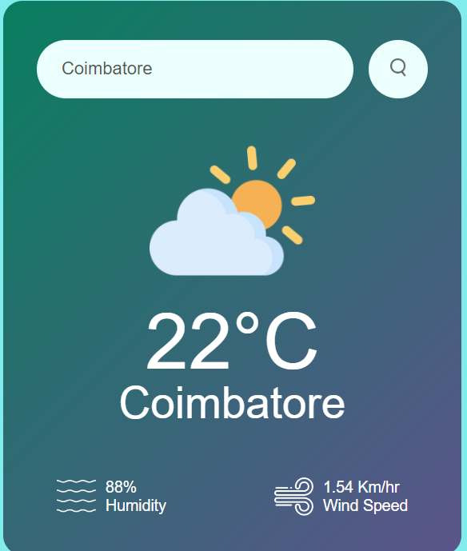

Chat_Room Website
That's a commendable effort! Working on a chatroom website for two months shows dedication and persistence in developing a real-time communication platform. As you continue with your project, consider highlighting the following aspects when communicating your experience:
Project Scope:
Undertook the development of a dynamic chat room website using Django, HTML, CSS, and JavaScript. The project aimed to provide users with a seamless, real-time communication platform without relying on traditional channels and sockets.
Technology Stack:
Employed Django for robust web development, with HTML and CSS for structure and styling. JavaScript enhanced user interactivity, creating a cohesive and visually appealing environment for real-time communication.
Challenges and Solutions:
Encountered challenges in deployment, socket and channel implementation, and 404 error rendering. Patched difficulties with meticulous troubleshooting, debugging, and contributions to community discussions. The learning process included insights into deployment strategies, effective socket management, and enhancing error handling mechanisms.
Learning Journey:
The journey involved continuous learning, embracing challenges, and adapting solutions. Skills in troubleshooting, debugging, and community collaboration were honed. The project served as a valuable platform for personal and professional growth in web development.
Technologies:
- - Python
- - Django + Django REST Framework
- - JS

Document Summerizer
That's a commendable effort! Working on a chatroom website for two months shows dedication and persistence in developing a real-time communication platform. As you continue with your project, consider highlighting the following aspects when communicating your experience:
Project Scope:
Embarked on creating a Document Summarizer website leveraging Langchain and the LAMINi T5 248M Hugging Face model. The aim was to revolutionize document analysis by providing users with a dynamic and efficient summarization tool.
Tech Stack:
Utilized the robust capabilities of Langchain for context understanding and the powerful transformer architecture of the LAMINi T5 248M model from Hugging Face. The integration promised accurate and contextually relevant document summarization, ensuring a versatile application.
Challenges And Solution
Faced initial hurdles in setting up Sentencepiece and Transformers, necessitating the installation of Microsoft VS Code C++ Build Tools and Rust. Through meticulous troubleshooting and community collaboration, overcame challenges to ensure a successful configuration. Continuous learning was key, prompting contributions to documentation and proactive engagement with Rust installation intricacies.
Learning Journey:
The journey was marked by a deep dive into advanced technologies, with a focus on understanding dependencies and resolving complex setup challenges. Embraced a proactive learning approach, staying updated on advancements, and documenting experiences for personal and community benefit. The project served as a platform for honing troubleshooting skills, debugging techniques, and an overall enhancement of knowledge in the realm of document summarization.
Technologies:
- - Python
- - Pytorch
- - Langchain
- - Sentencepiece
- - Transformers
- - Streamlit

Weather Website
Created a user-friendly Weather App website using HTML, CSS, and JavaScript, seamlessly integrating the Open Weather API for real-time forecasts. The project, executed without challenges, provided a solid learning experience in web development, emphasizing simplicity and effective API integration.
Project Scope:
Developed a straightforward Weather App website using HTML, CSS, and JavaScript, integrating the Open Weather API. The project aimed to provide users with a seamless and easy-to-use platform for checking real-time weather forecasts.
Tech Stack:
Utilized a simple yet effective tech stack, including HTML for structure, CSS for styling, and JavaScript for dynamic functionality. Integrated the Open Weather API for real-time weather data.
Challenges And Solution
The project was executed seamlessly with no notable challenges, allowing for straightforward development. The ease of building the Weather App underscored the simplicity of the chosen tech stack and the straightforward integration of the Open Weather API.
Learning Journey:
TThe learning journey involved hands-on experience with web development technologies and API integration. While no significant challenges were encountered, the project provided a solid foundation for understanding the basics of creating interactive and responsive websites.
Technologies:
- - HTML
- - CSS
- - Javascript
- - Open Weather API